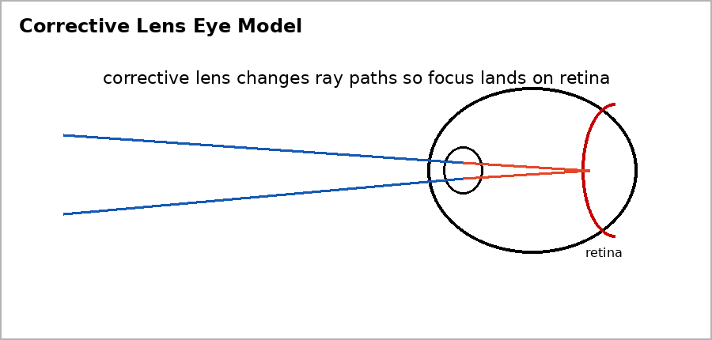

Unit 6 DOK 3.4 Corrective Lens Reasoning Task V1
Name:
Version 1
Show work and mark answers clearly.

A nearsighted eye focuses distant light in front of the retina.
- Explain the focusing problem.
- Describe what a corrective lens must do to the incoming rays.
- Explain how the correction improves vision.
Unit 6 DOK 3.4 Corrective Lens Reasoning Task V2
Name:
Version 2
Show work and mark answers clearly.
A farsighted eye focuses nearby objects behind the retina.
- Explain the focusing problem.
- Identify whether the corrective lens should help rays converge more or diverge more before entering the eye.
Unit 6 DOK 3.4 Corrective Lens Reasoning Task V3
Name:
Version 3
Show work and mark answers clearly.
A student says eyeglasses make the eye stronger.
- Critique the claim.
- Explain eyeglasses as ray-bending tools.
Unit 6 DOK 3.4 Corrective Lens Reasoning Task V4
Name:
Version 4
Show work and mark answers clearly.
Reading glasses help a person focus on nearby text.
- Describe what problem the glasses are correcting.
- Explain how the light path changes.
Unit 6 DOK 3.4 Corrective Lens Reasoning Task V5
Name:
Version 5
Show work and mark answers clearly.
An eye model shows rays meeting before the retina after passing through the eye lens.
- Identify the likely vision issue.
- Describe the role of a corrective lens.
Unit 6 DOK 3.4 Corrective Lens Reasoning Task V6
Name:
Version 6
Show work and mark answers clearly.
A diagram shows a corrective lens bending rays even farther away from the needed retina focus.
- Critique the diagram.
- Explain how the lens should be changed.